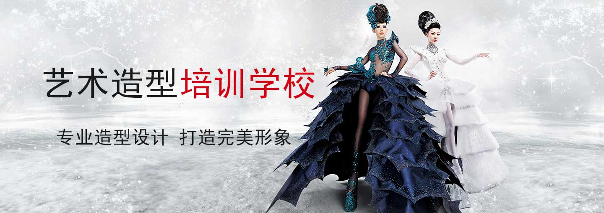

服务热线：2333333333
花火造型设计
形象设计（Image design）也称形象顾问，大多以人体色为基本特征和人的面部及身材、气质及社会角色等各方面综合因素，通过专业诊断工具。现阶段形象设计的杰出代表，测试出其色彩范围与风格类型，帮你找到最合适的服饰色彩、染发色、彩妆色、服饰风格款式，从而解决人们的所有形象问题。形象设计从广义的服务对象上可分为城市形象设计、企业形象设计、人物形象设计、产品形象设计等。
形象设计，从事的工作范围是对个人形象进行整体设计、指导的。大多以人体色为基本特征和人的面部及身材、气质及社会角色等各方面综合因素，通过专业诊断工具，测试出色彩范围与风格类型，帮你找到最合适的服饰色彩、染发色、彩妆色、服饰风格款式，从而解决人们的所有形象问题。
形象设计从广义的服务对象上可分为城市形象设计、企业形象设计、人物形象设计、产品形象设计等。
对形象设计领域进行细分，可以让我们更清晰形象设计的概念，每一个领域的形象设计都需要专业知识，才能成为这个领域的真正合格的形象设计师。